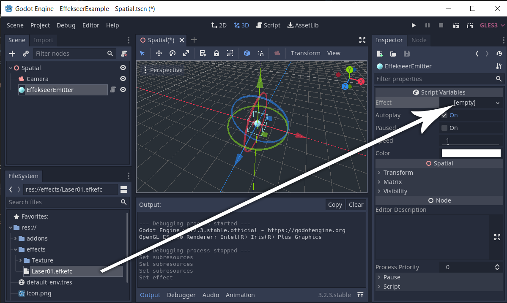
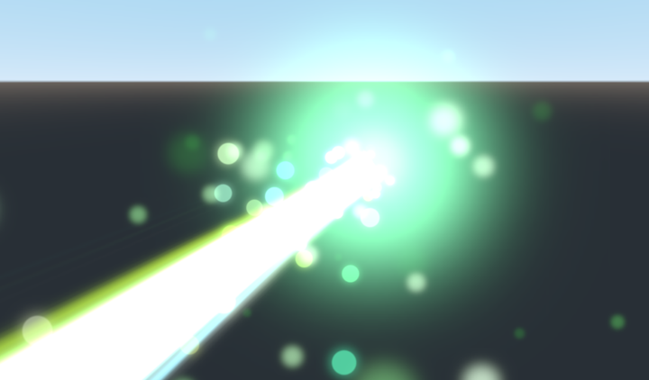

How to use¶
Install effekseer plugin¶
Copy the addons directory in EffekseerForGodot package into your Godot project.
Enable Status for Effekseer for Godot on the Plugins tab of Project Settings.

This completes the plugin installation.
Resources¶
Copy your effect files (*.efkefc), textures, sounds, materials, etc. into the res:// of your Godot project.

Import effects¶
The *.efkefc file is imported as a Godot resource.

If successful, subresources such as textures, models and materials will be linked as shown above.

If the subresource is not linked, try re-importing.

scale setting¶
Sometimes the size of the loaded effect is small and you want to adjust the size. In that case, select the efkefc file, change the scale parameter on the Import tab and press the Reimport button.
You can change the size of the effect by changing the Scale of EffekseerEmitter, but this method may not be magnified depending on the effect settings.
Emitter¶
Emitters are the source of effects and are used by placing them in a 3D scene.
To play the imported effect file, add Node with Effekseer Emitter attached to the node tree.

Then drag and drop the imported effect into the Effect property to specify it.

Since Autoplay is checked, the effect will be displayed when you run the scene.

Emitter’s inspector¶
| Property | Description |
|---|---|
| Effect | Sets the effect resource to play on the emitter |
| Autoplay | If checked, the effect will be played automatically at the start of the scene (_ready () timing) |
| Paused | Set the pause state during playback |
| Speed | Set the playback speed of the effect |
| Color | Set the color of the effect |
Project settings¶
You can configure Effekseer’s overall settings from Godot’s project settings.

| Property | Description |
|---|---|
| Instance Max Count | Maximum number of instances generated by a node at the same time |
| Square Max Count | Maximum number of rectangles used for drawing at the same time |
| Draw Max Count | Maximum number of draw calls at the same time |
| Sound Script | Script used for sound playback. Can be replaced |